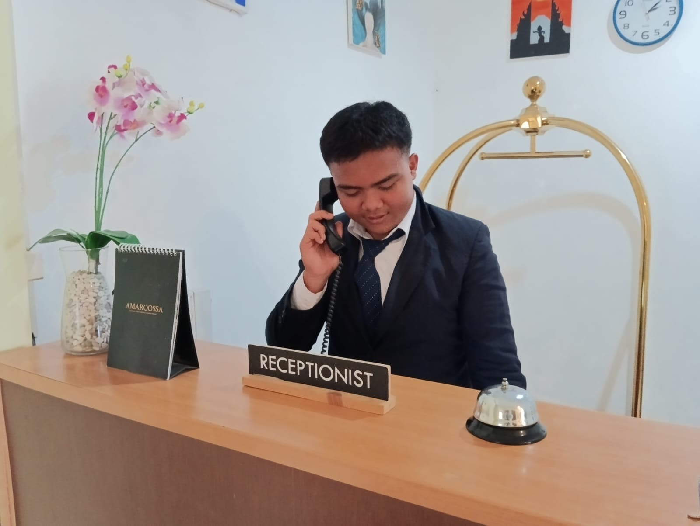

Proyek Terbaru
Resepsionis
Melayani Guest dari awal Check-in hingga proses Check-out

Handling Telephone
Melayani Tamu melalui telephone dengan menerapkan tata krama dan standar profesional

Simulasi Food & Beverage Service
Simulasi menjadi Room service,menerima panggilan telepon dan juga mengantarkan pesanan langsung ke kamar tamu